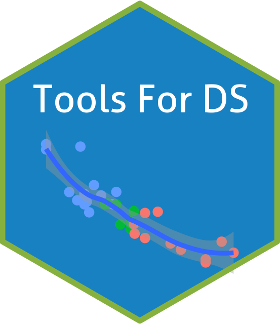

Tools for Data Science
TFDS

Welcome to TFDS
This eBook is used for Tools and Statistics for Data Science (TS4DS) courses offered at the University of West Florida, Hal Marcus College of Engineering and Science.
An 8-Week course on Tools for data science using R, Python, and SQL. Throughout the course, there will be hands-on exercises with computing resources. The course will include introductions to several packages in R, particularly Tidyverse, libraries in Python such as Pandas, NumPy, and matplotlib. SQL clauses including joins, sub-queries, and summary statistics.
Topics
- Introduction to R/RStudio/Quarto
- R Programming
- Python Programming
- Introduction to SQL
- Data input and output
- Data manipulation
- Summary statistics
- Graphics and Data visualization
Readings
In addition to material provided in this course, it is highly encouraged reading and reviewing some of the material, I will be pointing out throughout the course, including:
- R for Data Science (Wickham and Grolemund 2016). It is available free online.
- Hands-On Programming with R (Grolemund 2014). It is available free online.
- Exploring Enterprise Databases with R: A Tidyverse Approach (John David et al. 2020)
- Mastering Spark with R (Luraschi, Kuo, and Ruiz 2019). It is available free online.
- Practical Guide for Oracle SQL, T-SQL and MySQL (Zhang 2017)
- Think Python (Downey 2015)
- Data Science and Analytics with Python (Rogel-Salazar 2018)